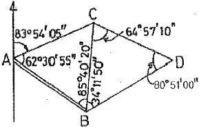
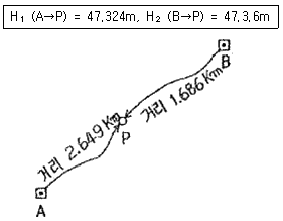
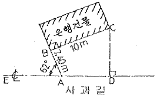
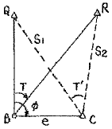
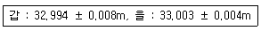
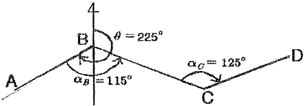
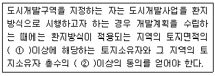

도시계획기사 (2007-03-04 기출문제)
1과목: 도시계획론
1. 도시공간이론과 주창자의 연결이 잘못된 것은?
- 동심원이론 - 버제스(Burgess)
- 선형이론 - 호이트(Hoyt)
- 다핵심이론 - 해리스(Harris)와 울만(Ullman)
- 다차원이론 - 디킨슨(Dickinsin)
(정답률: 알수없음)

2. 1902년 발표한 아디케스(Lex Adickes)법의 목적에 대한 설명으로 맞는 것은?
- 시당국이 민간의 토지를 시의 계획에 맞추어 계획한 후 재 배분하는 토지구획정리법
- 시민들이 합동으로 토지를 개발하여 이익을 배분하는 합동단지개발법
- 불량한 주택지나 상업지를 새로운 기능으로 개발하는 재개발법
- 직주근접을 위한 신도시개발법
(정답률: 알수없음)
3. 다음 중 생활권 계획에 관한 설명으로 틀린 것은?
- 생활권 주민간의 근린성과 사교성 등 사회적 기능을 원활화 하게 유도하기 위한 계획이다.
- 사람의 이용권에 따른 도시 시설을 적정 배치함으로써 도시 전체를 계획으로 유도한다.
- 급격한 도시사회의 변화에 적응하는 생활권 기능을 유도한다.
- 도시계획에 생활권 개념을 최초로 도입한 사람은 꼬르뷰지에(Le Corbusier)이다.
(정답률: 알수없음)
4. 일반적으로 도시교통체계의 3요소로 불리우는 것은?
- 교통시설, 교통수단, 교통운영
- 교통수요, 교통수단, 교통시설
- 교통수단, 교통수요, 교통운영
- 교통수단, 교통운영, 교통이용
(정답률: 알수없음)
5. 클라센(L. Klassen)이 주장한 도시화의 단계가 바르게 연결된 것은?
- 집중적 도시화→분산적 도시화→역도시화
- 분산적 도시화→집중적 도시화→역도시화
- 분산적 도시화→역도시화→집중적 도시화
- 집중적 도시화→역도시화→분산적 도시화
(정답률: 알수없음)
6. 도시행정수요(都市行政需要)의 증대와 관계가 가장 깊은 것은?
- 도시기능분화와 집적 불이익
- 도시규모의 쇠퇴
- 도시경제 활동의 입지변화
- 국가경쟁력제고
(정답률: 알수없음)
7. 토지구획정리사업에 관한 설명으로 틀린 것은?
- 대지로서의 효용증진과 공공시설정비를 위한 것이다.
- 사업의 시행과정에서 토지의 기존권리를 인정한다.
- 개발주체가 대상토지를 매입 또는 수용한다.
- 우리나라 신시가지 개발에 중요한 역할을 하였다.
(정답률: 알수없음)
8. 다음 중 도시를 구성하는 3대 요소가 아닌 것은?
- 도시활동(activity)
- 시민(citizen)
- 토지와 시설(land & Facility)
- 생활권(neighborhood unit)
(정답률: 알수없음)
9. 혐오시설의 입지를 둘러싼 이른바 NIMBY 현상에 대한 설명으로 틀린 것은?
- NIMBY 현상은 국민들의 쾌적한 환경에 대학 욕구 증대와 관련이 있다.
- NIMBY 현상을 타파하기 위해서는 혐오 시설 입지에 따라 적절한 피해 보상책도 강구하여야 한다.
- NIMBY 현상은 지방자치제가 본격적으로 실시됨에 따라 완화될 것이다.
- NIMBY 현상을 해결하기 위해 향후 지방정부의 중재자로서 역할이 중요해질 것이다.
(정답률: 알수없음)
10. 다음 중 교통존(traffic zone)의 설정기준으로 가장 거리가 먼 것은?
- 각 존은 가급적 동질적인 토지이용을 포함하도록 한다.
- 교통존을 행정구역과 일치시킨다.
- 간선도로가 가급적 존 경계선과 일치하도록 한다.
- 존내 통행량을 최대화되게 구획한다.
(정답률: 알수없음)
11. 통행발생 및 통행배분단계에서 추정된 존(zone)별 통행유출, 유입량 또는 존간 교차통행량을 통행수단별로 분할하는 과정을 주로 다루는 모형을 무엇이라고 하는가?
- 통합수요모형(combined demand models)
- 수단분담모형(modal split models)
- 통행발생모형(trip generation models)
- 경로선택모형(route choice models)
(정답률: 알수없음)
12. 우리나라 대도시지역의 주요 문제라고 볼 수 없는 것은?
- 토지ㆍ주택의 부족
- 교통혼잡과 환경악화
- 도시재정의 팽창과 재원부족
- 핵가족화 현상의 둔화
(정답률: 알수없음)
13. 경제기반이론에서 기반산업(basic industry)을 설명하는 것으로 적합하지 않은 것은?
- 대체로 수출산업이다.
- 제조업이 주종을 이룬다.
- 자급자족형의 성장산업이다.
- 외부로부터 화폐를 벌어들인다.
(정답률: 알수없음)
14. CBO의 정의로 가장 적합한 것은?
- 인구밀도가 가장 높은 지역
- 도시의 중추관리 기능이 집약된 지역
- 도시의 지리적 중심지역
- 시청이 입지한 지역
(정답률: 알수없음)
15. 동심원이론에서 중심업무지구와 가장 가까운 곳에 위치해 있는 지대는?
- 중산층주택지대
- 노동자주택지대
- 점이지대
- 통근자지대
(정답률: 알수없음)
16. 영국의 하워드(Ebenezer Howard)가 제시한 전원도시의 조건으로 맞는 것은?
- 자급자족 도시로 성장하기 위해 도시주위에 공업지대를 확보
- 도시의 계획인구는 3만명 미만으로 제한
- 도시 성장과 번영에 의한 개발이익의 일부는 환수
- 토지는 영구히 사유화
(정답률: 알수없음)
17. 다음 중 독자적이고 품격이 있는 도시를 만들어 매력있는 도시를 창조하고자 하는 도시관리 방식과 가장 관련이 있는 것은?
- 문화지향적 도시관리
- 시민참여적 도시관리
- 민영화 방식의 도시관리
- 제 3 섹터
(정답률: 알수없음)
18. 도시공공시설의 입지를 설명할 때 수요자의 이동거리를 최소화시키는 원칙은?
- 평균거리의 원칙
- 중앙입지의 원칙
- 중심극한정리
- 호텔링 원칙
(정답률: 알수없음)
19. 다음 중 도시화에 대한 설명으로 적합하지 않은 것은?
- 어느 지역의 산업 중에서 2, 3차 산업의 비중이 점차 증가해 간다.
- 일정지역에 인구집중 현상을 보여준다.
- 주변지역에 대한 영향력을 상실한다.
- 구조물과 토지이용의 변화가 현저하다.
(정답률: 알수없음)
20. 다음 중 간선교통망에 따라 주거지역의 공간구조 변화를 기술한 도시공간이론은?
- 다핵심이론
- 선형이론
- 3지대론
- 중심지이론
(정답률: 알수없음)
2과목: 도시설계 및 단지계획
21. 공동주택단지의 배치계획에 있어서 고려하여야 할 사항과 거리가 먼 것은?
- 단지 내 공동주택의 인동간격에 의하여 높이가 제한된다.
- 인접대지 경계선으로부터의 거리에 의해 높이가 제한된다.
- 단지 내 공동주택 건축물의 높이는 전면도로의 기능에 따라 높이가 제한된다.
- 대상건축물의 용도와 규모, 대지가 접하는 도로수에 따라 대지 안의 공지가 규정된다.
(정답률: 알수없음)
22. 다음 중 단지계획의 가장 올바른 과정은?
- 환경영향분석→문제의 정의→대안의 작성→평가
- 환경영향분석→문제의 정의→평가→대안의 작성
- 문제의 정의→환경영향분석→평가→대안의 작성
- 문제의 정의→대안의 작성→환경영향분석→평가
(정답률: 알수없음)
23. 다음 중 계획단위개발(Planned Unit Development)의 특성과 가장 관련이 없는 것은?
- 혼합토지이용(混合土地利用)
- 소유대지(所有垈地)의 공동 이용 개발
- 지역지구제(Zoning)에 의한 개발
- 집단개발(Cluster development)
(정답률: 알수없음)
24. 평균층수 3층, 건폐율 50%, 1호당 연상면적이 50M2일 때 호수밀도는 얼마인가?
- 200 호 /Ha
- 300 호 /Ha
- 400 호 /Ha
- 500 호 /Ha
(정답률: 알수없음)
25. 단지(團地)에 대한 가장 올바른 정의는?
- 동질적 용도의 통합된 단일 토지
- 이질적 용도의 통합된 단일 토지
- 동질적 용도의 분산된 여러 토지
- 이질적 용도의 분산된 여러 토지
(정답률: 알수없음)
26. 국지도로 기본 패턴의 특징에 관한 설명으로 틀린 것은?
- 격자형 - 가로망의 형태가 단순ㆍ명료하고 계획적으로 조성되는 시가지에 많이 이용된다.
- T자형 - 지구내 통과교통의 배제, 주행속도의 저하를 위한 형태이다.
- Locp형 - 불필요한 차량진입이 배제되고 Cul-de sac과 같이 통과교통이 없어 주거환경과 안전성이 확보된다.
- Cul-de sac형 - 목적지에 쉽게 접근할 수 있으나 교차점이 많이 교통흐름의 저해 및 교통사고 증가 등의 문제가 있다.
(정답률: 알수없음)
27. 대형 가구(super block)의 설명으로 가장 적합한 것은?
- 일방 교통계통으로 형성되는 대구역을 말한다.
- 연속된 가로로 둘러싸인 개발 가능한 대규모의 구역을 말한다.
- 보행자와 자동차의 출입이 완전히 분리되는 가구이다.
- 아파트를 배치하기 위하여 마련되는 대구역이다.
(정답률: 알수없음)
28. 다음 중 단지계획에 대한 설명으로 맞지 않는 것은?
- 집단주택지 계획의 준말로 비롯되어 공업단지계획, 농공단지계획 등 집단적으로 시설물을 계획, 설계하는 것을 의미한다.
- 인간이 행동을 하는데 불편함이 없도록 외부의 물리적인 환경을 조성하는 기술이다.
- 단지계획은 도시계획과 같은 하위계획을 포함하는 종합 환경계획의 총체적인 의미로 사용된다.
- 단지를 구성하는 모든 공간과 시설을 총괄하고 기획ㆍ계획과 설계ㆍ건설, 관리에 걸친 전 과정을 포괄한다.
(정답률: 알수없음)
29. 주택단지 개발에서 래드번(Radburn) 방식에 대한 설명으로 잘못된 것은?
- 보행자 도로와 자동차 도로가 거의 완전 분리된 방식이다.
- 슈퍼 블록(supeer block) 방식을 사용한다.
- 주택들은 소위 쿨데삭(cul-de-sac)에 의해 연결되어 주택의 전후가 전환되었다.
- 루프(loop)형 도로를 사용한다.
(정답률: 알수없음)
30. 어떤 주택단지의 토지이용 비율은 주택용지율 60%, 교통용지율 25%, 공원녹지 등 기타 용지율 15%이다. 이 주택단지의 총 인구밀도를 175인/ha로 계획한다면 주택용지에 대한 순 인구밀도는?
- 1⑤ 인/ha
- 130 인/ha
- 155 인/ha
- 292 인/ha
(정답률: 알수없음)
31. 단지계획시 현장조사에서 지표하부의 상황을 알아내는 것은 매우 중요한 임무의 하나이다. 다음 항목 중 단지계획시 현장조사의 일반적인 주요 사항으로 가장 거리가 먼 것은?
- 지열(지표하의 온도)
- 높은 지하수위
- 오염된 토양이나 부식토
- 지표 근처의 암반의 존재 유무
(정답률: 알수없음)
32. 도시계획시설의 결정ㆍ구조 및 설치기준에 관한 규칙에 의하여 단지계획의 가로망을 구성할 때 주간선도로와 보조간선도로가 접속되는 교차지점의 도로모퉁이 부분에서 보도와 차도의 경계선에 대한 곡선반경 기준은?
- 8 미터 이상
- 10 미터 이상
- 12 미터 이상
- 15 미터 이상
(정답률: 알수없음)
33. 근린주구 규모 주택단지의 중심 시설은?
- 유치원
- 초등학교
- 도매시장
- 교통광장
(정답률: 알수없음)
34. 여가 및 운동시설 단지를 계획함에 있어서 체육시설의 설치ㆍ이용에 관한 법률상의 공공체육시설의 구분에 속하지 않는 것은?
- 전문체육시설
- 생활체육시설
- 직장체육시설
- 여가체육시설
(정답률: 알수없음)
35. 경관분석을 위해 구역의 넓이, 분석의 정밀도 등에 따라 그리드(grid)의 크기를 나누고 등급화하여 경관을 분석하는 방법은?
- 기호화 방법
- 생태학적 방법
- 메쉬(Mesh)방법
- 사진판독법
(정답률: 알수없음)
36. 계획 밀도를 물리적 밀도와 활동밀도 및 입체밀도 등으로 구분할 때 물리적 밀도에 포함되지 않는 것은?
- 건폐율
- 용적률
- 호수밀도
- 토지이용률
(정답률: 알수없음)
37. 도시계획시설의 결정ㆍ구조 및 설치기준에 관한 규칙에 의하면 보조간선도로와 집산도로의 배치간격(m) 기준은?
- 60m 내외
- 250m 내외
- 500m 내외
- 1000m 내외
(정답률: 알수없음)
38. 주거단지계획시 수립되는 지구단위계획의 내용과 가장 거리가 먼 것은?
- 일조량의 제한
- 용적률의 제한
- 건축선에 관한 계획
- 건축물의 용도제한
(정답률: 알수없음)
39. 단지조사시 등고선도의 활용만으로 가능한 분석은?
- 토양토심
- 국지기후
- 지면경사
- 지하수망
(정답률: 알수없음)
40. 케빈 린치(Kevin Lynch)가 제안한 도시의 물리적 구조를 형성하는 요소에 포함되지 않는 것은?
- 통로(Path)
- 가장자리(Edge)
- 결절점(Node)
- 조경(Landscape)
(정답률: 알수없음)
3과목: 도시개발론
41. 다음과 같은 삼각망에서 CD의 방위는?

- S 12° 51'50"E
- S 12° 11'50"W
- S 23° 51'10"E
- S 23° 45'30"W
(정답률: 알수없음)
42. 수준측량에서 전시와 후시의 거리를 같게 하는 것이 좋은데 가장 큰 이유는?
- 레벨의 시준선 오차를 소거
- 망원경의 시야 변경
- 구차 소거
- 기차의 영향을 작게 하기 위해서
(정답률: 알수없음)
43. P점의 표고를 구하기 위하여 그림과 같이 A, B의 수준점에서 직접수준측량을 하여 각각 다음 값을 얻었다. P점의 표고는 얼마인가?

- 47.313m
- 47.315m
- 47.317m
- 47.319m
(정답률: 알수없음)
44. 노선거리 16km인 두 점 간의 수준차를 직접 수준측량에 의해 측량한 표준오차가 ±20mm이라면 1km당 표준오차는?
- 0.625mm
- 1.25mm
- 2.50mm
- 5.00mm
(정답률: 알수없음)
45. 큰 계곡이나 하천을 횡단하여 수준측량을 할 경우에 사용하는 수준측량의 방법으로 가장 알맞은 것은?
- 간접 수준측량
- 교로 수준측량
- 시거 수준측량
- 종단 수준측량
(정답률: 알수없음)
46. 광파거리측량기가 많이 이용되는 이유와 가장 거리가 먼 것은?
- 정확도가 높다.
- One-men Surveying이 가능하다.
- 기상조건의 영향을 받지 않는다.
- 전파거리측량기에 비해 조작지간이 짧다.
(정답률: 알수없음)
47. 표준지와 비교하여 7mm가 긴 30m 줄자로 경사면의 두 점을 측정한 결과 180m였다. 경사보정량이 1cm일 때 고저차는 얼마인가?
- 0.189m
- 0.897m
- 1.898m
- 2.897m
(정답률: 알수없음)
48. 다각측량에서 거리 및 측각의 정도는 동등하게 하는 것이 좋다고 한다. 거리의 허용오차를 1/10000이라고 할 때 측각의 허용 오차는 약 얼마인가?
- 10“
- 20“
- 30“
- 40“
(정답률: 알수없음)
49. 다음과 같이 “사과길”로부터 은행건물의 위치를 정확히 알고자 다음과 같은 측량결과를 얻었다. CD의 거리는? (단, ∠EAB=62°, AB=7.40m, BC=10m, ∠ABC=90°)

- 12.44m
- 12.30m
- 12.00m
- 11.23m
(정답률: 알수없음)
50. 다음 중 삼변측량에 대한 설명으로 옳지 않은 것은?
- 삼각측량에서 수평각을 관측하는 대신에 삼변의 길이를 관측하여 삼각점의 위치를 정확히 구하는 측량이다.
- 관측량의 수에 비하여 조건식외 수가 적고 측량값의 기상보정이 애매한 것이 결점이다.
- 삼변측량에서 변장 측정값에는 오차가 따르지 않는다고 생각한다.
- 전파나 광파를 이용한 거리측량기기가 발달하여 높은 정밀도로 장거리를 측량할 수 있게 됨으로써 삼변측량법이 발전되었다.
(정답률: 알수없음)
51. 주로 지역 내의 지성선 위치 및 그 위의 각점 표고를 실측도시하여 이것을 기초로 현지에서 지형을 관찰하면서 적당하게 등고선을 삽입하는 방법으로 비교적 소축척 산지에 이용되는 방법은?
- 횡단점법
- 직접법
- 좌표점법
- 종단점법
(정답률: 알수없음)
52. 다음 그림과 같은 편심관측에서 T'는 얼미안가? (단, S1=S2=2km, e=0.2m, ø=120°, T=60°)

- 59° 59‘ 43“
- 60° 00‘ 00“
- 60° 00‘ 17“
- 60° 00‘ 34“
(정답률: 알수없음)
53. 갑, 을 두사람이 동일조건하에 A~b 거리를 측정하여 다음 결과를 얻었다. 이때 최확값은 얼마인가?

- 32.997m
- 33.001m
- 33.0⑤m
- 33.009m
(정답률: 알수없음)
54. 축척 1:50000 지형도에서 3% 기울기의 노선을 선정하려면 이 노선상의 주곡선 간 도상 거리는? (단, 주곡선 간격은 20m임)
- 20.4m
- 13.3m
- 10.6m
- 7.5m
(정답률: 알수없음)
55. 표준길이보다 3cm 짧은 30m의 줄자를 이용하여 측정한 거리가 450m 이였다면 실제거리는 얼마인가?
- 449.45m
- 449.55m
- 485.45m
- 485.55m
(정답률: 알수없음)
56. 거리측량에 있어서 우연오차에 관한 설명으로 옳지 않은 것은?
- 우연오차는 부호화 크기가 불규칙하게 나타난다.
- 정오차와 고오를 소거시키고 남은 오차이다.
- 같은 크기의 정(+)오차와 부(-)오차의 발생확률은 같다.
- 오차의 크기나 방향이 일정한 오차이다.
(정답률: 알수없음)
57. 다음 그림에 대한 CD측선의 방위각은?

- θCD=55°
- θCD=255°
- θCD=135°
- θCD=170°
(정답률: 알수없음)
58. 다음 경중률(weight)에 대한 설명 중 틀린 것은?
- 관측값의 신뢰도
- 관측횟수에 반비례
- 관측거리에 반비례
- 평균제곱근오차의 제곱에 반비례
(정답률: 알수없음)
59. 방위각이 225°인 측선의 방위는?
- S75° W
- S15° W
- N75° E
- N15° E
(정답률: 알수없음)
60. 삼각망 구성에 있어서 가장 정밀도가 높은 삼각망은?
- 유심 삼각망
- 사변형 삼각망
- 단열 삼각망
- 종합 삼각망
(정답률: 알수없음)
4과목: 국토 및 지역계획
61. 지역계획입안과정에서 주민이 참여함으로써 기대되는 효과로 볼 수 없는 것은?
- 주민의사의 계획반영
- 주민의 자발적 협조에 의한 집행의용이
- 주민상호간의 이해대립의 해소
- 주민의 지역계획 관심 증대
(정답률: 알수없음)
62. 다음 중 지역개발을 위한 지역계획의 목표와 가장 관계가 먼 것은?
- 대인당 평균소득의 지역간 불균형 완전 제거
- 지역실업의 해소
- 국가 성장에 기여할 수 있는 지역의 성장 잠재력 활성화
- 지역간 주민생활복지수준의 균등화
(정답률: 알수없음)
63. 지역의 분류 중 결절지역에 대한 설명으로 가장 알맞은 것은?
- 주어진 기준에 따라 특성이 유사한 지역
- 특정의 지역문제를 해결하기 위하여 행정력에 의하여 확정된 지역
- 상호의존적ㆍ보완적 관계를 가진 몇 개의 공간단위를 하나로 묶은 지역
- 실업율이 비슷한 지역
(정답률: 알수없음)
64. 다음 중 국토기본법상 국토종합계획에 포함되는 내용이 아닌 것은?
- 재정확충 및 도시기본계획의 시행을 위하여 필요한 재원조달에 관한 사항
- 국토의 현황 및 여건변화 전망에 관한 사항
- 주택ㆍ상하수도 등 생활여건의 조성 및 삶의 질 개선에 관한 사항
- 지하공간의 합리적 이용 및 관리에 관한 사항
(정답률: 알수없음)
65. 성장거점이론(Geowth Pole theory)과 직접적으로 관련이 없는 사람은?
- 미르달(G. Myrdal)
- 허시만(A. O. Hirschman)
- 보데빌(J. R. Boudevilie)
- 오웬(R. Owen)
(정답률: 알수없음)
66. 우리나라의 제1차 국토종합개발계획에서 권역설정으로 옳은 것은?
- 4대권 8중권 17소권
- 28개 지방정주생활권
- 9개 광역생활권
- 4개 대도시경제권
(정답률: 알수없음)
67. 다음의 용도지구 중 주거기능ㆍ상업기능ㆍ공업기능ㆍ유통물류기능ㆍ관광기능ㆍ휴양기능 등을 집중적으로 개발ㆍ정비할 필요가 있을 때 지정되는 지구는?
- 개발진흥지구
- 보존지구
- 시설보호지구
- 특정용도제한지구
(정답률: 알수없음)
68. 다음 중 수도권정비계획에서 말하는 인구집중유발시설이 아닌 것은?
- “산업집적활성화 및 공장설립에 관한 법률”의 규정에 의한 공장으로서 건축물의 연면적이 200m2 인 것
- 업무용시설 및 판매용시설이 주용도인 건축물로서 연면적이 10000m2인 건축물
- “고등교육법”의 규정에 의한 학교로서 대학, 산업대학, 교육대학, 또는 전문대학
- 중앙행정기관의 청사로서 건축물의 연면적이 1000m2인 것
(정답률: 알수없음)
69. 월터 크리스탈러와 오거스트 뢰쉬에 의해서 전개된 중심지이론에 있어 중심지개념의 기초가 되는 시장권 크기의 결정 요인이 아닌 것은?
- 재화나 용역생산의 규모의 경제의 크기
- 재화나 용역에 대한 수요의 밀도
- 수송비용의 크기
- 생산 공장의 규모
(정답률: 알수없음)
70. 국토의 계획 및 이용에 관한 법률에 의해 지정되는 용도지역이 아닌 것은?
- 도시지역
- 준농림지역
- 자연환경보전지역
- 농림지역
(정답률: 알수없음)
71. 다음 중 국토 및 지역계획이 형성된 배경과 가장 관계가 먼 것은?
- 농촌지역의 황폐화
- 대도시 집중 및 과밀문제
- 지역 불균형
- 지자체 주도적 경제개발 필요
(정답률: 알수없음)
72. 다음의 제4차 국토종합계획의 시도별 발전방향에 대한 설명 중 옳지 않은 것은?
- 부산 : 환태평양권 국제 해양ㆍ물류 도시
- 대구 : 동북아권 국제정보ㆍ교류 도시
- 광주 : 첨단산업ㆍ문화예술 중심도시
- 대전 : 과학기술 중추도시
(정답률: 알수없음)
73. 인구성장의 상한성을 미리 상정한 후에 미래 인구를 추계하는 인구예측모형으로, 곡선의 모양이 S자형의 대칭곡선으로 이루어진 것은?
- 지수모형
- 수정된 지수모형
- 로지스틱모형
- 곰페르츠모형
(정답률: 알수없음)
74. 다음 중 프랑스 파리권의 집중억제를 위하여 실시한 정책이 아닌 것은?
- 오스만의 파리대개조계획
- 파리소재 대학의 지방이전
- 신축 건물에 대한 부담금제도
- 일정규모이상의 기업체의 신증축시 사전허가제 적용
(정답률: 알수없음)
75. 다음 중 보데빌(Boudeville)에 의한 지역의 구분에 속하지 않는 것은?
- 사업지역(program area)
- 계획권역(planning region)
- 분극지역(polarized region)
- 동질지역(homogeneous area)
(정답률: 알수없음)
76. 우리나라 제3차 국토종합개발계획의 기간은?
- 1960년-1970년
- 1971년-1981년
- 1982년-1991년
- 1992년-2001년
(정답률: 알수없음)
77. 포스트모던 도시론에 대한 설명 중 틀린 것은?
- 다원주의, 신보수주의를 이데올로기로 하고 있다.
- 도시 공간의 성격은 자본의 축적과 재생산의 장소로 인식한다.
- 도심회복, 교외의 성장, 분산화, 다핵화 및 혼합적 용도지역제의 도시형태를 추구한다.
- 탈구조주의와 해체주의에 입각하여 도시 공간의 실체를 인식한다.
(정답률: 알수없음)
78. 다음 중 제 4차 국토종합계획의 통합국토축과 발전전략의 연결이 옳지 않은 것은?
- 서울ㆍ부산축 : 산업구조 개편 및 정비기반 구축
- 환동해축 : 환동해권 국제관광 및 기간산업의 고도화
- 환남해축 : 국제물류ㆍ관광ㆍ산업특화지대로 육성
- 북부내륙축 : 수도권기능 분산수용 미 산악-연안 연계관괄 활성화
(정답률: 알수없음)
79. 다음 중 지역균형개발 빛 지반중소기업육성에 관한 법률에 의한 광역개발사업계획의 수립 및 시행에 관한 설명으로 옳지 않은 것은?
- 광역개발사업계획을 작성할 때는 주민 및 관계전문가의 의견을 청취해야 한다.
- 광역개발사업계획의 내용에는 산업입지, 주거단지, 위락ㆍ휴식 공간등 광역개발권역 안의 토지 이용에 관한 사항이 포함된다.
- 광역개발사업계획의 수립은 광역시장 또는 도지사가 작성한다.
- 광역개발사업계획의 지정은 지역발전을 위하여 필요하다고 인정되는 경우 광역시장 또는 도지사만이 할 수 있다.
(정답률: 알수없음)
80. 기반부문 고용이 50000명, 비기반부문 고용이 15000명, 총 인구수가 250000명일 때 경제기반이론에 의한 기반비와 기반승수는?
- 기반비 : 0.4, 기반승수 : 2.5
- 기반비 : 0.4, 기반승수 : 5.0
- 기반비 : 1.5, 기반승수 : 2.5
- 기반비 : 1.5, 기반승수 : 5.0
(정답률: 알수없음)
5과목: 도시계획관계법규
81. 다음 중 도시게획시설의 결정ㆍ구조 및 설치기준에 관한 규칙상 교통시설 중 도로의 사용 및 형태별 구분에 속핮 않는 것은?
- 지하도로
- 보행자전용도로
- 자전거 전용도로
- 보, 차 공존도로
(정답률: 알수없음)
82. 도시공원 및 녹지 등에 관한 법률상 허가를 받지 않고 도시공원 안에서 공원시설 외의 시설, 건축물 또는 공작물을 설치한 자에 대한 벌칙기준은?
- 1년 이하의 징역 또는 500만원 이하의 벌금
- 2년 이하의 징역 또는 200만원 이하의 벌금
- 50만원 이하의 벌금
- 100만원 이하의 벌금
(정답률: 알수없음)
83. 국토의 계획 및 이용에 관한 법령상 각 용도지역안에서의 건폐율 기준이 옳지 않은 것은?
- 제2종전용주거지역 : 50% 이하
- 전용공업지역 : 70% 이하
- 준주거지역 : 60% 이하
- 보전녹지지역 : 20% 이하
(정답률: 알수없음)
84. 도시계획시설의 결정ㆍ구조 및 설치기준에 관한 규칙상 유통 및 공급시설의 유통업무설비에 속하지 않는 것은?
- 화물터미널
- 여객자동차터미널
- 농수산물도매시장
- 자동차경매장
(정답률: 알수없음)
85. 다음의 도시개발구역의 지정에 관한 법령 내용 중 ()안에 들어갈 말로 알맞은 것은?

- ① 1/3, ② 1/2
- ① 1/2, ② 1/3
- ① 2/3, ② 1/2
- ① 1/2, ② 2/3
(정답률: 알수없음)
86. 노상 주차장을 설치할 수 있는 자가 아닌 것은?
- 도지사
- 특별시장
- 군수
- 구청장
(정답률: 알수없음)
87. 도로의 기능별 구분 중 시ㆍ군내 주요지역을 연결하거나 시ㆍ군 상호간을 연결하여 댛량통과교통을 처리하는 도로로서 시ㆍ군의 골격을 형성하는 도로는?
- 특수도로
- 집산도로
- 국지도로
- 주간선도로
(정답률: 알수없음)
88. 시ㆍ도지사는 관광개발기본계획에 의하여 구분된 권역을 대상으로 하여 권역별관광개발계획을 수립하여야 하는데, 다음 중 권역별관광개발계획에 포함되는 내용과 가장 거리가 먼 것은?
- 전국의 관광여건 및 관광동향에 관한 사항
- 권역의 관광수요 및 공급에 관한 사항
- 관광자원의 보호ㆍ개발ㆍ이용ㆍ관리등에 관한 사항
- 관광지 연계에 대한 사항
(정답률: 알수없음)
89. 국토의 계획 및 이용에 관한 법령상 용도지역 중 상업지역을 세분화한 것으로 틀린 것은?
- 중심상업지역
- 일반상업지역
- 근린상업지역
- 준상업지역
(정답률: 알수없음)
90. 다음 중 주택법에 의한 최저주거기준에 대한 설명으로 옳지 않은 것은?
- 건설교통부장관은 국민이 쾌적하고 살기 좋은 생활을 영위하기 위하여 필요한 최저주거기준을 설정ㆍ공고하여야 한다.
- 건설교통부장관이 최저주거기준을 설정ㆍ공고하고자 하는 경우에는 미리 관계중앙행정기관의 장과 협의하고 주택정책시의위원회의 심의를 거쳐야 한다.
- 최저주거기준에는 주거면적, 용도별 방의 개수, 주택의 구조ㆍ설비ㆍ성능 및 환경요소 등의 사항이 포함되어야 한다.
- 최저주거기준은 사회적ㆍ경제적인 여건변화에 따라 변경되지 않아야 한다.
(정답률: 알수없음)
91. 주택재개발사업에서 조합과 공동으로 시행자가 될 수 없는 자는?
- 건설교통부장관
- 시장
- 주택공사
- 군수
(정답률: 알수없음)
92. 하나의 도시지역 안에 있어서의 도시공원의 확보기준은 해당도시지역 안에 거주하는 주민 1인당 얼마 이상으로 하는가?
- 6m2
- 7m2
- 8m2
- 9m2
(정답률: 알수없음)
93. 노후된 공동주택 등 건축물이 밀집된 지역으로서 새로운 개발보다는 현재의 환경을 유지하면서 이를 정비할 필요가 있을 때 지정되는 용도지구는?
- 중심지미관지구
- 일반미관지구
- 시가지경관지구
- 리모델링지구
(정답률: 알수없음)
94. 다음 중 과밀부담금에 대한 설명으로 옳은 것은?
- 부담금은 건축비의 100분의 20으로 한다.
- 부담근에 반영되는 건축비는 산업자원부 장관이 고시하는 표준건축비를 기준으로 선정한다.
- 건축물 중 주차장의 용도로 사용되는 건축물은 부담금을 감면할 수 없다.
- 부담금은 부과대상건축물이 속하는 지역을 관할하는 시ㆍ도 지사가 부과 징수한다.
(정답률: 알수없음)
95. 국토의 계획 및 이용에 관한 법령에서 시가화조정구역에 관한 설명으로 옳은 것은?
- 건설교통부장관이 관계행정기관의 장의 요청을 받은 경우에만 지정할 수 있다.
- 무질서한 시가화 방지를 목적으로는 일정기간 동안 시가화를 유보할 수 없다.
- 시가화조정구역이 효력을 상실한 경우 건설교통부장관이 그 사실을 고시하여야 한다.
- 시가화조정구역지정의 실효고시는 실효된 도시기본계획의 내용을 관보에 게재하는 방법에 의한다.
(정답률: 알수없음)
96. 택지개발사업의 시행자는 택지개발사업을 시행하고자 할 때 택지개발계획을 작성하여 누구에게 승인을 얻어야 하는가?
- 건설교통부장관
- 도지사
- 광역시장
- 관할시장ㆍ군수
(정답률: 알수없음)
97. 도시공원 및 녹지 등에 관한 법률상 녹지의 기능에 의한 분류에 속하지 않는 것은?
- 시설녹지
- 완충녹지
- 연결녹지
- 경관녹지
(정답률: 알수없음)
98. 수도권정비계획법상의 총량규제에 관한 설명 중 옳지 않은 것은?
- 건설교통부장관은 인구집중유발시설이 수도권에 과도하게 집중되지 아니하도록 하기 위하여 그 신설ㆍ증설의 총허용량을 정할 수 있다.
- 건설교통부장관은 인구집중유발시설이 수도권에 과도하게 집중되지 아니하도록 하기 위하여 일정한 기준을 초과하는 신설ㆍ증설을 제한할 수 있다.
- 공장에 대한 총량규제의 내용 및 방법은 수도권정비위원외의 심의를 거쳐 결정하며, 관할 시ㆍ도지사는 이를 고시하여야 한다.
- 관계행정기관의 장은 인구집중유발시설의 신설ㆍ증설에 대하여 규정에 의한 총량규제의 내용과 다르게 허가 등을 하여서는 아니 된다.
(정답률: 알수없음)
99. 도시 및 주거환경정비법에 사용하는 용어의 정의로 옳지 않은 것은?
- 주거환경개선사업 : 도시저소득주민이 집단으로 거주하는 지역으로서 정비기반시설이 극히 열악하고 노후ㆍ불량건축물이 과도하게 밀집한 지역에서 주거환경을 개선하기 위하여 시행하는 사업
- 주택재건축사업 : 정비기반시설이 열악하고 노후ㆍ불량건축물이 밀집한 지역에서 주거환경을 개선하기 위하여 시행하는 사업
- 공동이용시설 : 주민이 공동으로 사용하는 놀이터ㆍ마을회관ㆍ공동작업장 그 밖에 대통령령이 정하는 시설
- 주택단지 : 주택 및 부대ㆍ복리시설을 건설하거나 대지로 조성되는 일단의 토지로서 대통령령이 정하는 범위에 해당하는 일단의 토지
(정답률: 알수없음)
100. 건축법에 의하면 시ㆍ도지사는 지역계획 또는 도시계획상 특히 필요하다고 인정하는 경우에는 시장ㆍ군수ㆍ구청장의 건축허가를 제한할 수 있다. 이와 관련된 다음의 설명 중 옳지 않은 것은?
- 건축허가 제한은 2년 이내로 하되, 1회에 한하여 1년 이내의 범위에서 그 제한기간을 연장 할 수 있다.
- 건축허가를 제한할 때 시ㆍ도지사는 지방도시계획위원회의 심의를 반드시 거쳐야 한다.
- 시ㆍ도지사는 시장ㆍ군수ㆍ구청장의 건축허가를 제한한 경우에는 즉시 건설교통부장관에게 보고하여야 한다.
- 건축허가권자는 건축허가 제한에 관한 사항을 공고하여야 한다.
(정답률: 알수없음)